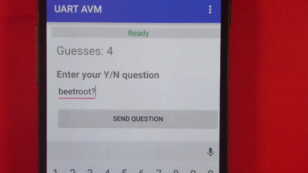

Bluetooth UART Service¶
Introduction¶
This Bluetooth Low Energy (BLE) service is an optional part of the standard bluetooth profile for the micro:bit. It is a passive service, that can operate transparently in the background as your main program is running. It provides a form of serial data communications capability over Bluetooth low energy and can be used to exchange arbitrary sequences of bytes in either direction between micro:bit and connected peer.
Enabling and Using the Service¶
This service is disabled by default. To enable the service, create an instance of this class in your program at any time after the uBit object has been initialised. Send data from the micro:bit to the connected peer at any time using one of the send methods of the MicroBitUARTService class. To receive data from the connected peer use one of several methods such as readUntil which blocks until a specified delimiter value is received and then returns all previous octets in the receive buffer. Consult the API for details.
Note that it may make sense to coordinate use of the UART service with the state of the Bluetooth connection, only reading or sending serial data when there is an active Bluetooth connection. Two micro:bit message bus events are provided for this purpose. A full example appears below.
MicroBitUARTService *uart;
Note
Using Bluetooth services is memory hungry. By default, some of the memory normally used by Nordic's Bluetooth protocol stack (known as a SoftDevice), is reclaimed by the micro:bit runtime as general purpose memory for your applications. if you enable more Bluetooth services, then you may need to provide more memory back to Soft Device to ensure proper operation. If after enabling this service your Bluetooth application cannot access the service reliably, you should consider increasing the value of MICROBIT_SD_GATT_TABLE_SIZE in your inc/MicroBitConfig.h. The more service you add, the larger this will need to be, up to the limit defined in MicroBitConfig.h.
Bluetooth Service Specification¶
Please see the micro:bit Bluetooth profile specification.
Example micro:bit application - Animal Vegetable Mineral game¶
#include "MicroBit.h"
#include "MicroBitSamples.h"
#include "MicroBitUARTService.h"
MicroBit uBit;
MicroBitUARTService *uart;
int connected = 0;
void onConnected(MicroBitEvent e)
{
uBit.display.scroll("C");
connected = 1;
// my client will send ASCII strings terminated with the colon character
ManagedString eom(":");
while (connected == 1) {
ManagedString msg = uart->readUntil(eom);
uBit.display.scroll(msg);
}
}
void onDisconnected(MicroBitEvent e)
{
uBit.display.scroll("D");
connected = 0;
}
void onButtonA(MicroBitEvent e)
{
if (connected == 0) {
uBit.display.scroll("NC");
return;
}
uart->send("YES");
uBit.display.scroll("YES");
}
void onButtonB(MicroBitEvent e)
{
if (connected == 0) {
uBit.display.scroll("NC");
return;
}
uart->send("NO");
uBit.display.scroll("NO");
}
void onButtonAB(MicroBitEvent e)
{
if (connected == 0) {
uBit.display.scroll("NC");
return;
}
uart->send("GOT IT!!");
uBit.display.scroll("GOT IT!!");
}
/*
Recommend disabling the DFU and Event services in MicroBitConfig.h since they are not needed here:
#ifndef MICROBIT_BLE_DFU_SERVICE
#define MICROBIT_BLE_DFU_SERVICE 0
#endif
#ifndef MICROBIT_BLE_EVENT_SERVICE
#define MICROBIT_BLE_EVENT_SERVICE 0
#endif
*/
int main()
{
// Initialise the micro:bit runtime.
uBit.init();
// listen for Bluetooth connection state changes
uBit.messageBus.listen(MICROBIT_ID_BLE, MICROBIT_BLE_EVT_CONNECTED, onConnected);
uBit.messageBus.listen(MICROBIT_ID_BLE, MICROBIT_BLE_EVT_DISCONNECTED, onDisconnected);
// listen for user button interactions
uBit.messageBus.listen(MICROBIT_ID_BUTTON_A, MICROBIT_BUTTON_EVT_CLICK, onButtonA);
uBit.messageBus.listen(MICROBIT_ID_BUTTON_B, MICROBIT_BUTTON_EVT_CLICK, onButtonB);
uBit.messageBus.listen(MICROBIT_ID_BUTTON_AB, MICROBIT_BUTTON_EVT_CLICK, onButtonAB);
// Note GATT table size increased from default in MicroBitConfig.h
// #define MICROBIT_SD_GATT_TABLE_SIZE 0x500
uart = new MicroBitUARTService(*uBit.ble, 32, 32);
uBit.display.scroll("AVM");
// If main exits, there may still be other fibers running or registered event handlers etc.
// Simply release this fiber, which will mean we enter the scheduler. Worse case, we then
// sit in the idle task forever, in a power efficient sleep.
release_fiber();
}
Known Issue In the onConnected event handler method, the call to ManagedString msg = uart->readUntil(eom); blocks until the specified end of message character is received. This prevents the event handler from exiting. Under normal circumstances this is fine. If however the connected application loses its connection and then reconnects, the onConnected method will not execute and therefore the 'connected' variable which tracks the Bluetooth connection state will not update. The micro:bit application will now behave as though it is not in a connection and therefore functions such as sending text by pressing a button will not work. In this situation the user should simply reset their micro:bit and reconnect their smartphone application. An API which allows serial reads to unblock or perhaps threads to be terminated is under consideration for a future release of the micro:bit runtime.
Example Applications for Android/IOS/Android¶
General Procedures¶
A connected peer such as a smartphone application can transmit data to the micro:bit, up to a maximum of 20 octets at a time by writing to the RX Characteristic. Either of the Write Request or Write Command (i.e. write with no response) PDUs may be used by the client.
See the profile page and profile reference documentation UUID details.
Android¶

Android Bluetooth APIs¶
Android developers should make themselves familiar with the Android Bluetooth low energy APIs
microbit-ble-demo-android¶
The open source microbit-ble-demo-android application contains a demonstration of the micro:bit Bluetooth UART service in the form of a guessing game called Animal Vegetable Mineral. The main body of code for this demonstration can be found in ui.UartAvmActivity.java except for the Bluetooth operations themselves which are in bluetooth.BleAdapterService which acts as a kind of higher level Bluetooth API for activities to use without needing to directly concern themselves too closely with the Android APIs themselves. In most cases, operations are asynchronous so that the activity code initiates a Bluetooth operation by calling one of the methods in bluetooth.BleAdapterService (e.g. readCharacteristic(....) ) and later receives a message containing the result of the operation from this object via a Handler object. The message is examined in the Handler code and acted upon.
Key parts of the magnetometer demonstration in this application are explained next.
In bluetooth.BleAdapterService¶
public static String UARTSERVICE_SERVICE_UUID = "6E400001B5A3F393E0A9E50E24DCCA9E";
public static String UART_RX_CHARACTERISTIC_UUID = "6E400002B5A3F393E0A9E50E24DCCA9E";
public static String UART_TX_CHARACTERISTIC_UUID = "6E400003B5A3F393E0A9E50E24DCCA9E";
In ui.UartAvmActivity¶
// enabling indications on the UART TX characteristic
if (bluetooth_le_adapter.setIndicationsState(Utility.normaliseUUID(BleAdapterService.UARTSERVICE_SERVICE_UUID), Utility.normaliseUUID(BleAdapterService.UART_TX_CHARACTERISTIC_UUID), true)) {
showMsg(Utility.htmlColorGreen("UART TX indications ON"));
} else {
showMsg(Utility.htmlColorRed("Failed to set UART TX indications ON"));
}
// handling indications
case BleAdapterService.NOTIFICATION_OR_INDICATION_RECEIVED:
bundle = msg.getData();
service_uuid = bundle.getString(BleAdapterService.PARCEL_SERVICE_UUID);
characteristic_uuid = bundle.getString(BleAdapterService.PARCEL_CHARACTERISTIC_UUID);
b = bundle.getByteArray(BleAdapterService.PARCEL_VALUE);
if (characteristic_uuid.equalsIgnoreCase((Utility.normaliseUUID(BleAdapterService.UART_TX_CHARACTERISTIC_UUID)))) {
String ascii="";
try {
ascii = new String(b,"US-ASCII");
} catch (UnsupportedEncodingException e) {
e.printStackTrace();
showMsg(Utility.htmlColorGreen("Could not convert TX data to ASCII"));
return;
}
if (!ascii.equals(Constants.AVM_CORRECT_RESPONSE)) {
showAnswer(ascii);
} else {
showAnswer(ascii+" You only needed "+guess_count+" guesses!");
}
}
break;
// sending data to the micro:bit by writing to the RX Characteristic
public void onSendText(View view) {
EditText text = (EditText) UartAvmActivity.this.findViewById(R.id.avm_question_text);
try {
String question = text.getText().toString() + ":";
byte[] ascii_bytes = question.getBytes("US-ASCII");
bluetooth_le_adapter.writeCharacteristic(Utility.normaliseUUID(BleAdapterService.UARTSERVICE_SERVICE_UUID), Utility.normaliseUUID(BleAdapterService.UART_RX_CHARACTERISTIC_UUID), ascii_bytes);
guess_count++;
showGuessCount();
} catch (UnsupportedEncodingException e) {
e.printStackTrace();
showMsg("Unable to convert text to ASCII bytes");
}
}